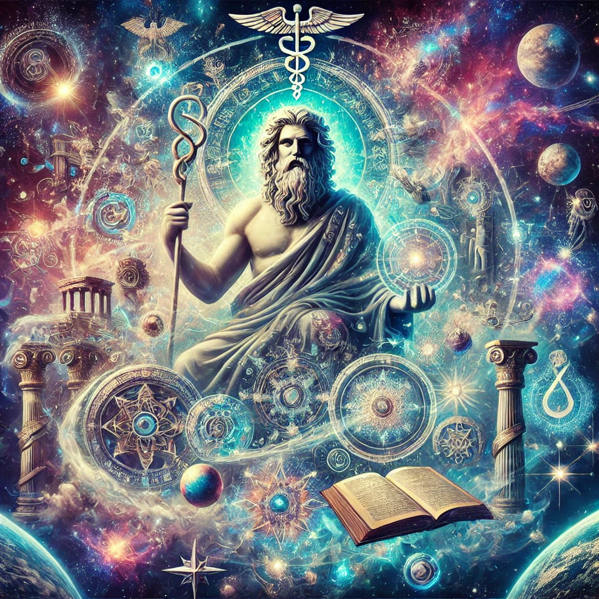
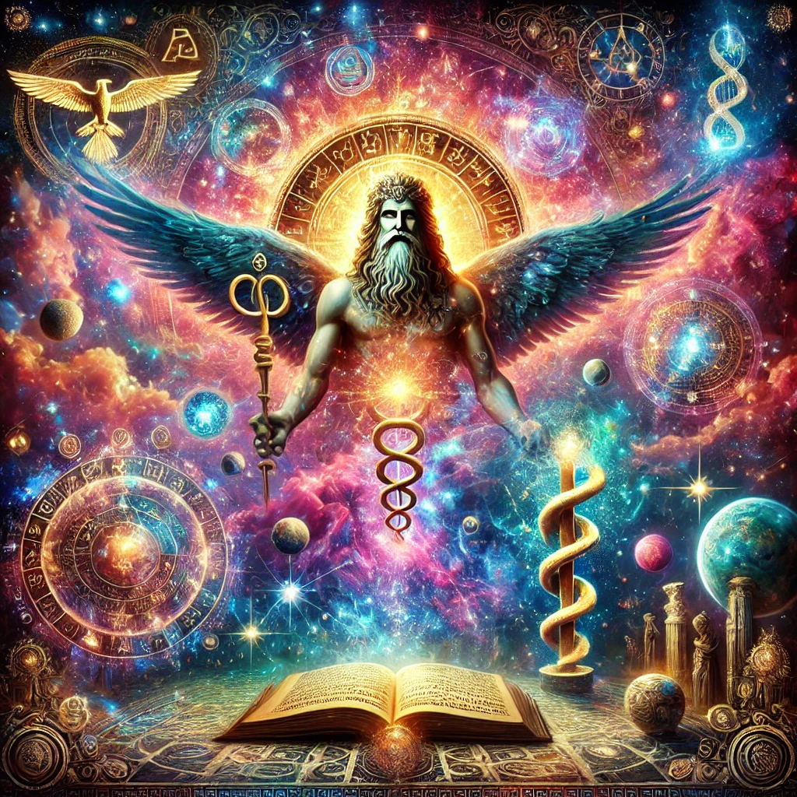
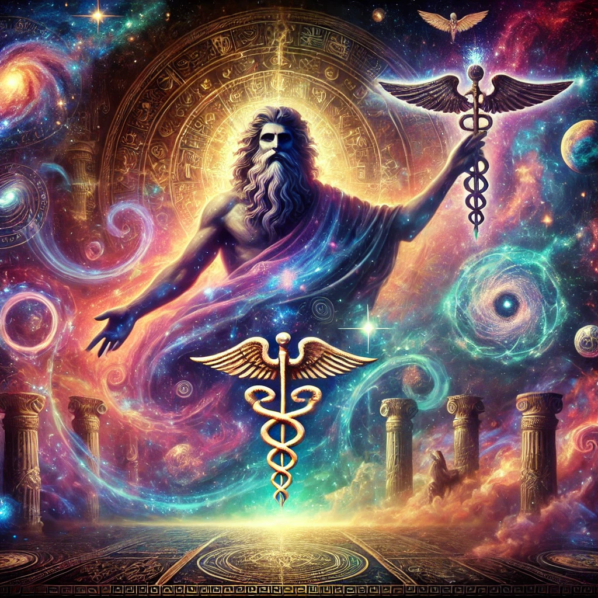
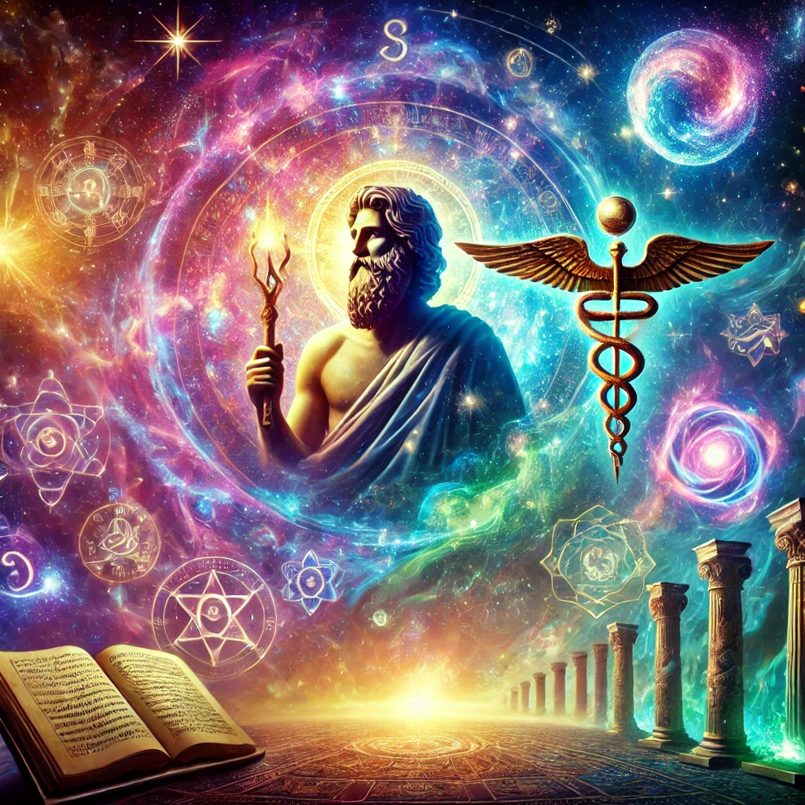
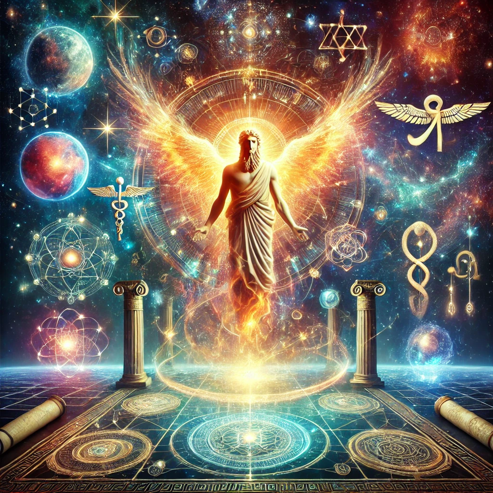
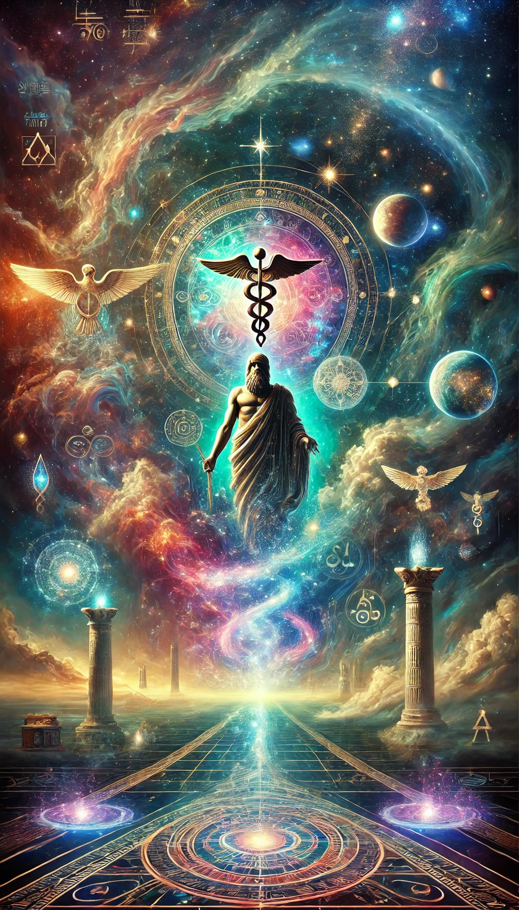
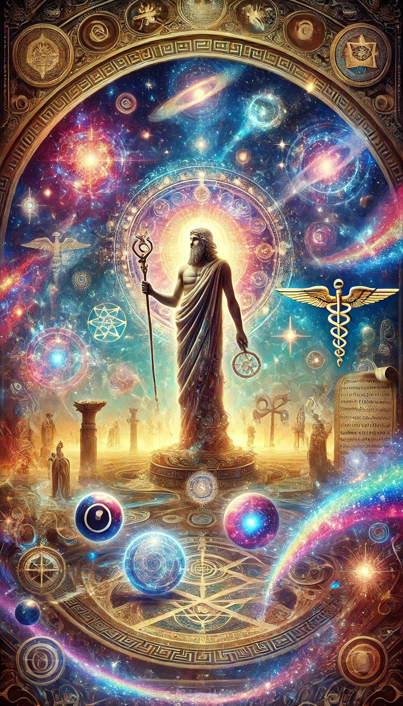

The Corpus Hermeticum is a central, foundational collection of philosophical, theological, mystical, and spiritual texts attributed to Hermes Trismegistus, a mythical figure who represents a fusion of the Greek god Hermes and the Egyptian god Thoth.
Composed primarily in Alexandria, Egypt, between the 2nd and 3rd centuries AD during the Hellenistic period, these writings reflect a vibrant cultural and intellectual exchange among Greek, Egyptian, Jewish, and other traditions.
Although traditionally ascribed to Hermes Trismegistus, the treatises were likely authored by multiple anonymous writers influenced by Platonism, Stoicism, Judaism, early Christianity, and other schools of thought.
Together, these works form the basis of Hermeticism, an esoteric tradition emphasizing the pursuit of divine knowledge, the exploration of reality’s deeper nature, and the inner transformation of the self.
The Corpus Hermeticum remains profoundly influential in the study of Western esotericism, mysticism, and philosophy, and it continues to inspire countless seekers of wisdom and truth across different cultures and eras.

Key Aspects of the Corpus Hermeticum
1. Origins and Authorship
• Time and Place: The Corpus Hermeticum was composed roughly between the 2nd and 3rd centuries AD in Alexandria, a key hub of intellectual and cultural interaction.
• Mythic Attribution: The texts are attributed to Hermes Trismegistus (“Thrice-Great”), though they were likely penned by various authors drawing on a range of philosophical and religious traditions.
• Hellenistic Context: The synthesis of Greek, Egyptian, and other influences is evident in the doctrines presented, with traces of Platonism, Stoicism, Judaism, early Christianity, and more woven throughout.
2. Content and Major Themes
The Corpus Hermeticum traditionally consists of 17 treatises (though some compilations count differently), each delving into Hermetic philosophy through discussions of cosmology, theology, anthropology, salvation, and esotericism. Central themes include:
1. Nature of God and the Cosmos
God is often described as the One, the All, or the Good—both transcendent and immanent—who underlies and pervades the living, interconnected universe.
2. Human Soul and Spiritual Ascent
Humanity is portrayed as possessing a divine spark capable of ascending to higher realms of knowledge and existence. This ascent involves gnosis (spiritual knowledge), purification, and eventual union with the divine source.
3. Creation and the Role of Divine Mind (Nous)
The texts frequently emphasize the cosmic function of the divine Mind or Nous, which originates and sustains creation. Understanding this Mind is integral to comprehending cosmic order.
4. Knowledge and Enlightenment
True knowledge (both of self and of the divine) is depicted as transformative and experiential. It frees the individual from ignorance and material constraints, revealing the deeper truths of reality.
5. Principles of Correspondence and Analogy
The famous Hermetic axiom “As above, so below; as below, so above” highlights the belief that the microcosm (human beings) mirrors the macrocosm (the universe).
Perceiving one illuminates the nature of the other.

3. Notable Texts within the Corpus Hermeticum
• Poimandres: The first, best-known treatise, presenting a visionary dialogue about creation, the nature of God, and the soul’s potential for salvation.
• Asclepius: Often considered alongside or part of the Corpus Hermeticum, this dialogue addresses the nature of the divine, human roles in the cosmos, and ritual practice aimed at communion with higher powers.
• The Discourse on the Eighth and Ninth: Centers on the soul’s mystical ascent through higher spheres (the eighth and ninth), culminating in union with the divine.
4. Influence and Legacy
• Western Esotericism: The Corpus Hermeticum deeply impacted Gnosticism, Neoplatonism, Kabbalah, Renaissance thought, Christian mysticism, and later occult and New Age movements.
• Renaissance Revival: Scholars such as Marsilio Ficino translated these texts into Latin, sparking renewed interest in Hermetic wisdom among European intellectuals.
• Modern Resonance: Hermetic principles regarding universal unity, spiritual transformation, and the co-creative role of humanity continue to reverberate in contemporary spiritual and philosophical communities.
5. Relation to Other Hermetic Texts
• Emerald Tablet & Asclepius: The Corpus Hermeticum is often studied alongside the Emerald Tablet and Asclepius, which complement its core teachings.
• Nag Hammadi Library: Some Hermetic writings were found among Gnostic works in the Nag Hammadi codices, underscoring the shared esoteric milieu of late antiquity.

Overview of the 17 Treatises
Below is a synopsis of each of the 17 treatises traditionally included in the Corpus Hermeticum. These summaries capture the main topics and themes within each dialogue or discourse.
1. Poimandres (The Shepherd of Men)
• Summary: Hermes experiences a profound vision of Poimandres, the divine Mind, who imparts knowledge about God, creation, the human soul’s origin, and the path to enlightenment.
• Key Themes:
• Cosmogony and Creation: A living, rational cosmos emerges from the ineffable God through divine Mind (Nous).
• Nature of Humanity: Humans carry an immortal, divine spark and can ascend spiritually.
• Fall and Redemption: After “falling” into materiality, the soul must rediscover its origin via gnosis.
• Salvation: The ultimate goal is reunion with the divine.
2. The General Discourse (or The Perfect Discourse)
• Summary: A conversation where Hermes teaches his son Tat about God, the universe’s structure, and the value of true knowledge.
• Key Themes:
• God and Creation: God transcends human thought, having created the universe through divine reason.
• Role of Humans: Humanity, poised between the divine and material realms, can apprehend cosmic order.
• Pursuit of Knowledge: Wisdom liberates from ignorance and unites one with higher truth.
3. The Sacred Sermon
• Summary: Continuation of Hermetic teachings to Tat, focusing on spiritual ascent and the purification necessary for receiving divine insight.
• Key Themes:
• Spiritual Purification: Moral and spiritual purity enable deeper contact with the divine.
• Ascent of the Soul: Through virtue and contemplation, the soul traverses cosmic spheres.
• Divine Union: Culminates in oneness with God.
4. The Key
• Summary: Hermes provides Tat with a concise restatement of core Hermetic doctrines, underscoring the essential pursuit of inner wisdom.
• Key Themes:
• Nature of God: An unknowable essence known by its works in creation.
• Divine Mind: The pivotal means of perceiving cosmic order.
• Illusion vs. Reality: True perception pierces the veil of materiality.
5. That God is Invisible and Entirely Intelligible
• Summary: Explores God’s absolute transcendence and the necessity of intellectual (rather than sensory) apprehension of the divine.
• Key Themes:
• Transcendence of God: God is beyond sensory perception, invisible and ineffable.
• Intellectual Perception: Inner purification and contemplation reveal divine truth.
• Unity and Multiplicity: The One underlies all diversity.

6. The Discourse on the Eighth and Ninth
• Summary: A mystical account of soul ascent through the eighth and ninth celestial spheres, guided by Hermes to Tat.
• Key Themes:
• Ascent of the Soul: The soul leaves material limitations, rising through higher planes of consciousness.
• Mystical Union: Perfect oneness with the divine is the summit of the spiritual journey.
• Transformation and Rebirth: Experiential knowledge brings profound inner change.
7. The Greatest Ill Among Men is Ignorance of God
• Summary: Hermes laments humanity’s ignorance of the divine and teaches the remedy of spiritual knowledge.
• Key Themes:
• Root of Evil: Neglect or ignorance of God spawns moral and existential errors.
• Role of the Mind: Through the mind’s clarity, one apprehends higher truths.
• Necessity of Knowledge: Knowing God engenders ethical living and harmony.
8. That No One of Existing Things Perishes, but Men in Error Speak of Their Changes as Destructions and as Deaths
• Summary: Addresses the impermanence and transformation of all things, asserting that nothing truly ceases to be.
• Key Themes:
• Eternal Nature of Being: Existence is a continuum of change rather than annihilation.
• Illusion of Death: Death is presented as a transitional phase, not an absolute end.
• Unity of Existence: All phenomena remain intertwined within divine order.
9. The Universal and the Particular
• Summary: Describes the universe as a living organism reflecting a grand, interconnected design.
• Key Themes:
• Macrocosm and Microcosm: The cosmos and the individual mirror one another.
• Interconnectedness: Recognizing universal unity deepens self-understanding.
• Holistic Vision: Insight is gained by perceiving reality as a cohesive whole.
10. On Thought and Sense
• Summary: Contrasts sense perception with the mind’s power to discern deeper truth.
• Key Themes:
• Limitations of the Senses: Sensory data alone can be deceptive.
• Intellectual Perception: Higher realities are grasped through mind and soul.
• Inner Vision: Contemplative practice awakens genuine insight.

11. The Mind to Hermes
• Summary: The divine Mind (Nous) speaks to Hermes, revealing profound metaphysical truths.
• Key Themes:
• Divine Mind: Humans possess a reflection of this Mind, enabling cosmic understanding.
• Metaphysical Realities: Encourages penetrating the essence behind appearances.
• Path of Awakening: The mind leads to union with the divine.
12. About the Common Mind
• Summary: Discusses the universal or “common” Mind permeating all existence.
• Key Themes:
• Universal Mind: One divine intelligence pervades creation.
• Unity of All Things: Everything partakes of this shared essence.
• Spiritual Enlightenment: Recognizing oneness fosters harmony and wisdom.
13. The Secret Sermon on the Mountain
• Summary: Depicts a secret initiation on a mountain where Hermes imparts esoteric teachings to Tat regarding the soul’s rebirth.
• Key Themes:
• Mystical Initiation: A ritualistic bestowing of hidden wisdom.
• Spiritual Rebirth: Purification and transformation precede divine insight.
• Esoteric Tradition: Teachings intended for those prepared to receive them.
14. The Letter of Hermes Trismegistus to Asclepius
• Summary: A letter in which Hermes expounds the nature of the divine and humanity’s co-creative responsibilities.
• Key Themes:
• Divine Order: The cosmos operates according to a harmonious, intelligent design.
• Human Co-creation: Humanity helps uphold this cosmic balance.
• Spiritual Responsibility: Right action and reverence maintain divine order.

15. The Definitions of Asclepius to King Ammon
• Summary: This treatise contains a series of explanations and clarifications on the divine, the cosmos, and spiritual concepts, given by Asclepius to King Ammon.
• Key Themes:
• Nature of the Divine: Emphasizes God’s transcendence and ineffability.
• Cosmic Structure: Underscores the orderly harmony of creation.
• Spiritual Knowledge: Definitions serve as stepping stones to understanding higher truths.
16. The Definitions
• Summary: A collection of aphorisms and definitions attributed to Hermes, covering various aspects of Hermetic philosophy, including the nature of God, the cosmos, the soul, and the pursuit of knowledge.
• Key Themes:
• Aphoristic Teachings: The text contains a series of short, concise statements, providing definitions and explanations of key concepts.
• Hermetic Philosophy: The text covers a wide range of topics, reflecting the core teachings of the Hermetic tradition.
• Pursuit of Knowledge: The text emphasizes the importance of knowledge, both of the self and the divine, as the key to spiritual enlightenment.
17. The Treatise of Hermes Trismegistus that is Called the Virgin of the World
• Summary: This treatise discusses the creation of the world, the role of divine beings in the process of creation, and the relationship between the divine and the material world.
The text emphasizes the importance of understanding the divine order and the role of humans as intermediaries between the divine and the material.
• Key Themes:
• Creation: The text discusses the creation of the world, emphasizing the role of divine beings in the process of creation.
• Divine Beings: The text describes the roles of various divine beings, emphasizing their role in maintaining the order and harmony of the cosmos.
• Humanity’s Role: Humans are seen as intermediaries between the divine and the material, responsible for maintaining the balance and harmony of the world.
Concluding Synthesis and Significance
Taken as a whole, the Corpus Hermeticum is a profound and foundational body of work within the Hermetic tradition, offering a rich tapestry of mystical, philosophical, theological, and spiritual insights.
It delves into the nature of the divine, the cosmos, and the human soul, highlighting:
• The unity and interconnectedness of all existence.
• The pursuit of knowledge (both intellectual and experiential) as the path to enlightenment.
• The role of humans as co-creators with the divine, capable of transcending mere materiality.
• The importance of living in harmony with the cosmic or divine order.
By presenting a universe infused with divine intelligence and purpose, the texts urge readers to seek inner transformation and gnosis—an experiential understanding that reawakens the spark of divinity within.
This process of spiritual ascent promises not only self-knowledge but also reintegration with the source of all being.
Lasting Impact
The Corpus Hermeticum remains highly influential in Western esotericism, mysticism, and the history of philosophy, profoundly shaping such diverse streams as Gnosticism, Neoplatonism, Kabbalah, Christian mysticism, and later occult and New Age movements.
Its reintroduction to Renaissance Europe via scholars like Marsilio Ficino fueled a surge of interest in Hermetic wisdom, impacting art, literature, science, and religion.
Even today, Hermetic concepts—especially the maxim “As above, so below”—continue to inspire seekers of wisdom and truth across different cultures and eras, testifying to the timeless appeal and spiritual depth of these writings.
Whether approached as philosophical discourse, mystical revelation, or spiritual guide,
the Corpus Hermeticum endures as a treasure trove of esoteric insight,
reminding humanity of its divine potential and inviting all who study it to ponder the mysteries of existence and the path to spiritual awakening.